TRDEnterprise UX2025 - Present
Building the Operational Backbone of Toyota Racing
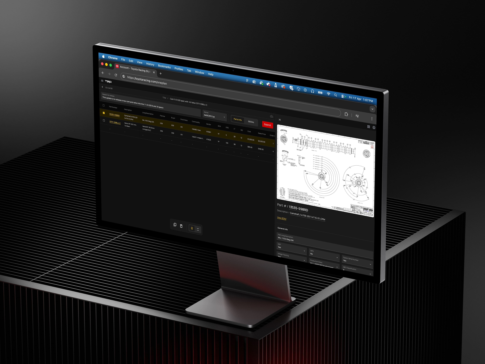
Problem
From spreadsheets to systems
TRD operates in a complex, performance-critical environment supported by their Internal System, the operational backbone behind engineering, manufacturing, testing, and track support.
However, over 20+ years, critical workflows shifted outside the platform into Excel, shared folders, and manual coordination, creating fragmented processes, inconsistent data, and no reliable source of truth.
Solution
Structuring complex workflows
The goal wasn’t simply to improve usability, it was to re-establish the platform as TRD’s operational backbone.
By redesigning workflows, reconnecting fragmented processes, reducing manual overhead, and introducing a scalable design system, we transformed the system into a structured, workflow-driven platform built for long-term growth.
Impact
01. FROM FRAGMENTED WORKFLOWS TO A CONNECTED SYSTEM
Unified disconnected workflows, spreadsheets, and manual coordination into a single operational platform with a shared source of truth.
02. FROM TRIBAL KNOWLEDGE TO REPEATABLE PROCESSES
Introduced guided workflows and system logic, reducing reliance on experience and improving onboarding for new team members.
03. From Manual Error Detection to Built-In Validation
Moved validation earlier into the process, catching issues before approval and preventing errors from propagating downstream.
04. FROM PATCHWORK UI TO SCALABLE PRODUCT FOUNDATION
Established a scalable design system and architecture, enabling consistent experiences and faster product development.
05. From Limited Visibility to Informed Decision-Making
Surfaced critical information and system relationships upfront, enabling faster, more accurate decisions without relying on experience or guesswork.
01 Define the Ways of Working
Before the Solution, the Shift
To support the redesign, I helped establish a structured, problem-led way of working that aligned product, design, and engineering across the full delivery lifecycle, from discovery and validation through implementation and iteration.
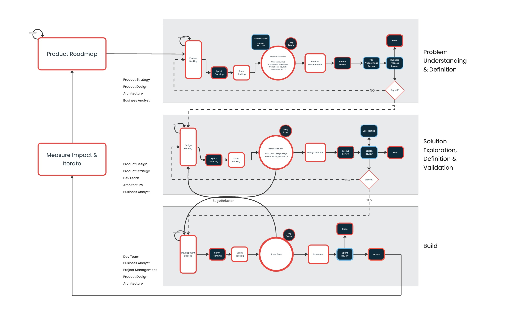
Way of Working Framework
A major challenge was shifting expectations around how solutions were defined and delivered. TRD was accustomed to rapid request-based implementation, which over time contributed to fragmented workflows and patchwork fixes.
Rather than responding to requests at face value, we reduced scope intentionally and prioritised high-impact operational problems first. The platform evolved iteratively over time, expanding as new needs emerged.
This shift introduced a scalable, problem-led delivery model that balanced operational speed with long-term system integrity.
02 Understanding Current State
Understanding the System
It was critical to understand how work actually happened across TRD, not just within the Internal System, but across the broader ecosystem of tools, teams, and operational processes.
Over time, critical workflows had become distributed across spreadsheets, documentation, informal coordination, and disconnected systems. To uncover how work truly moved through the organisation, we mapped operational flows, system relationships, and decision-making dependencies across teams.
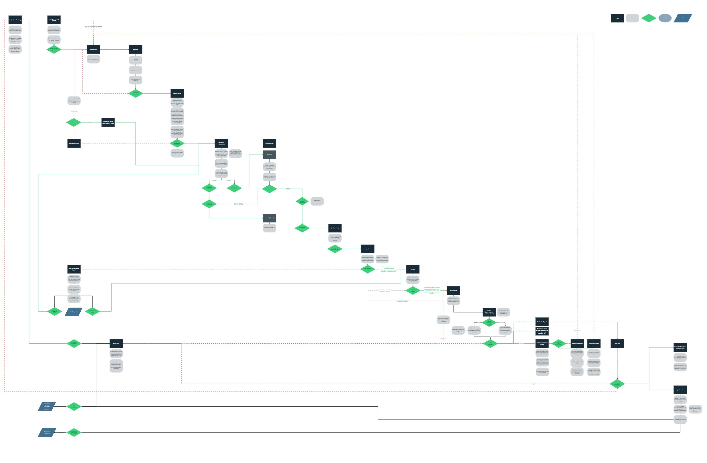
Initial Product Diagram
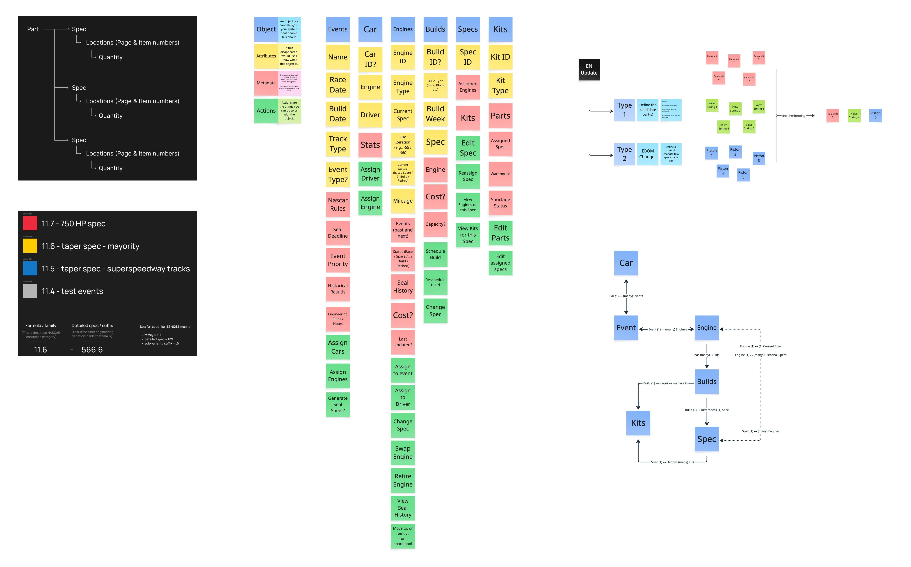
System Architecture Mapping
Key Insights
01. THE SYSTEM WASN’T THE SOURCE OF TRUTH
Critical workflows existed outside the platform across spreadsheets, shared folders, and informal coordination, creating inconsistent data and reducing trust in the system.
02. WORKFLOWS WERE FRAGMENTED ACROSS TEAMS AND TOOLS
Processes spanned disconnected systems with unclear ownership, leading to communication breakdowns and heavy reliance on manual handoffs.
03. USERS RELIED ON TRIBAL KNOWLEDGE TO COMPLETE TASKS
The system exposed operational complexity without guidance, requiring users to rely on institutional knowledge rather than structured workflows.
04. ERRORS WERE CAUGHT TOO LATE IN THE PROCESS
Validation occurred primarily during review and approval stages, allowing operational errors to propagate before being identified.
05. DELIVERY WAS DRIVEN BY REQUESTS
Request-driven implementation encouraged short-term fixes, increasing long-term system complexity and fragmentation.
04 Explore future state
Designing from the Flow
Building on the insights uncovered during discovery, we explored how the platform could better support operational decision-making, planning, and workflow coordination across TRD.
A key principle was to define future-state workflows before moving into interface design. By co-creating flows with stakeholders early, we aligned teams around how the system should behave before introducing visual refinement.
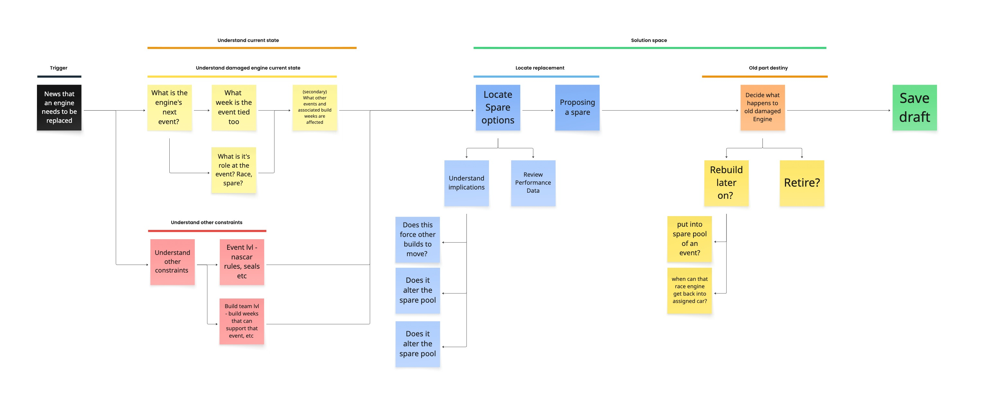
Future State Decision Flow: Engine Replacement
After establishing the operational flows, we facilitated collaborative working sessions with stakeholders and users to shape high-level interface concepts for critical moments across the platform.
Working at a lower level of fidelity allowed us to focus on workflow structure, system logic, and information hierarchy without the distraction of visual polish. This created early alignment around the operational behaviour of the system before moving into detailed design.
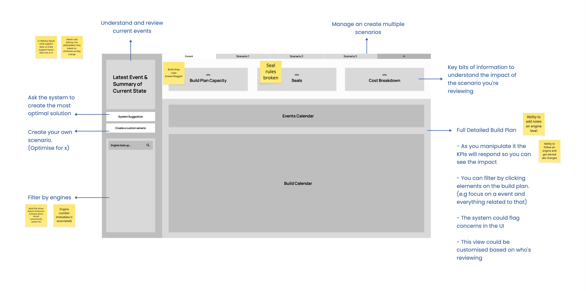
Build Plan Initial Wireframe
05 Initial Prototypes & Screens
Designing with Real Data
With future-state workflows aligned, we began translating operational concepts into testable product experiences.
Because the platform depended heavily on complex operational data, low-fidelity concepts quickly became insufficient. Placeholder content made it difficult for stakeholders and users to accurately evaluate workflows, system relationships, and decision-making scenarios.
To improve the quality of feedback, we moved rapidly into high-fidelity prototypes using realistic data structures and operational scenarios. This allowed teams to engage with the platform in ways that more closely reflected real-world usage, leading to more informed validation and faster iteration.
06 Validate & Refine the Solution
From AI Prototypes to Real-World Validation
With high-fidelity concepts in place, we shifted into collaborative validation, testing workflows directly with stakeholders and users in operational scenarios.
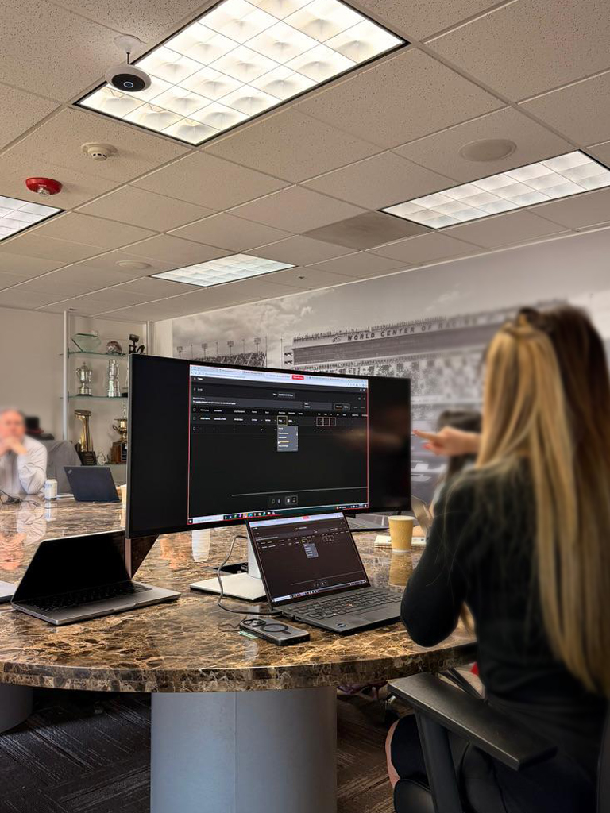
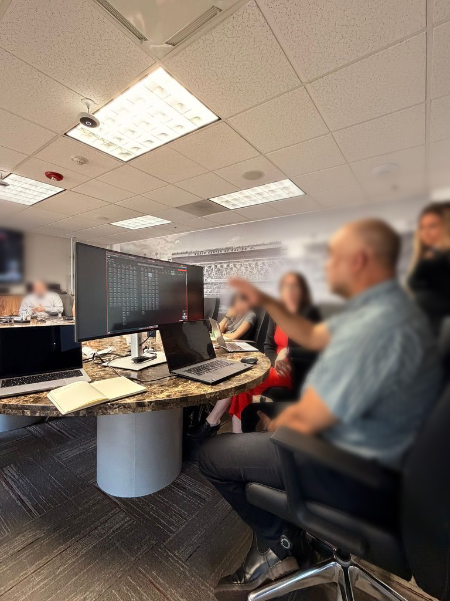
Onsite co-creation session
To support this process, we leveraged AI-assisted prototyping workflows using tools such as Figma MCP and Figma Make to create production-like experiences with realistic data and system behaviour. This allowed teams to move beyond static concepts, interact with workflows in context, and provide more informed operational feedback.
07 Final Design & Refinement
From Insights to Final Design
Building on validated insights, we translated learnings from stakeholder collaboration and operational testing into production-ready workflows and interfaces.
Feedback directly informed how information was prioritised, how workflows adapted to operational scenarios, and how system states, dependencies, and validation logic were surfaced across the platform.
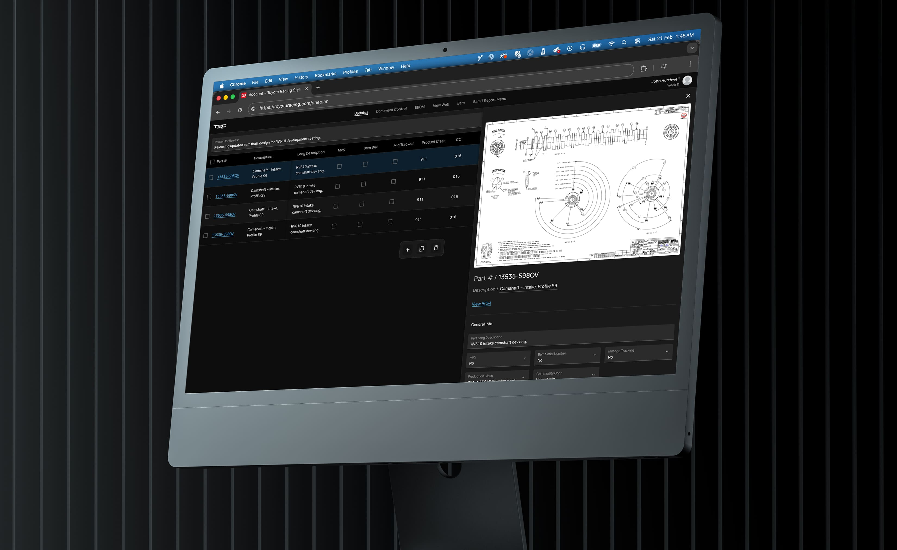
08 Design to Delivery
AI-Driven Development
A key part of delivery was establishing a scalable design system within Figma, creating a shared foundation of components, tokens, and interaction patterns reusable across the platform.
To reduce friction between design and engineering, we explored AI-assisted workflows using tools such as Figma MCP and Codex, enabling design system architecture and interface logic to translate more directly into implementation.
These workflows were integrated into the BMAD method, creating a more structured and scalable approach to AI-assisted development while strengthening alignment between design and code.
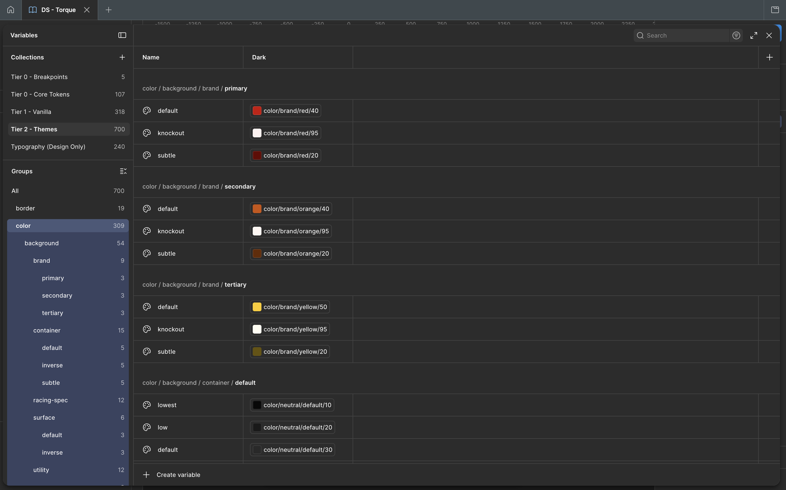
01 - Established scalable token architecture from primitives through semantic variables, creating a reusable foundation aligned with atomic design principles.
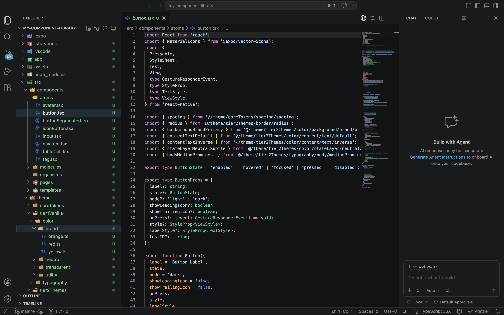
02 - Translated design system architecture into reusable React components using Figma MCP and Codex, establishing a scalable Storybook component library.
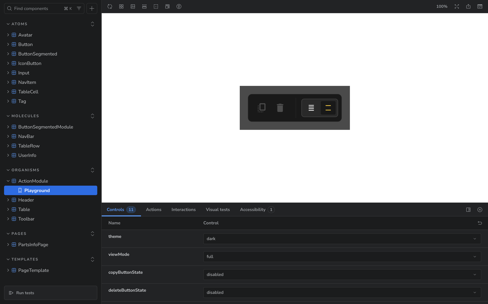
03 - Integrated the design system and component library into AI-assisted delivery workflows, using the component library as structured context for the BMAD method.

This is an active, evolving project.
As the platform continues to evolve through new operational modules and iterative refinement, this case study will continue to expand alongside it.